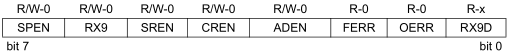
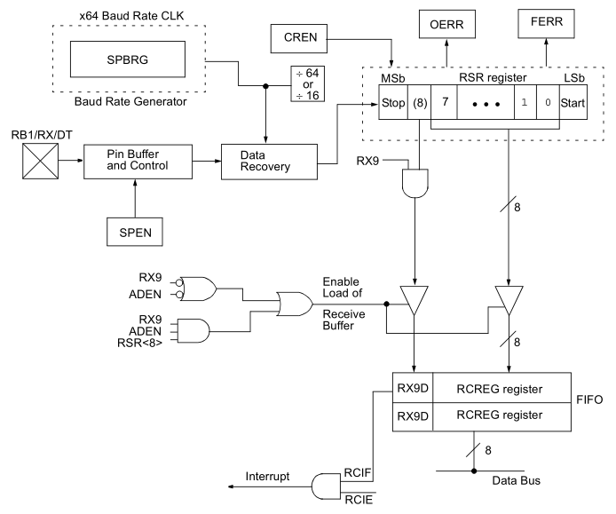

Episódio 24: Conhecendo o módulo USART - Recepção assíncrona e a interrupção associada
Neste episodio, que é um complemento do episodio 23 (anterior) que trata da transmissão no modulo USART, vamos aprender a receber dados pelo modulo USART.
Começaremos conhecendo o registrador RCSTA (Receive Status and Control Register) que fara o controle sobre o processo de recebimento de informações, visto na Figura 24.1
| Figura 24.1 - Registrador RCSTA |
|---|
|  |
| Fonte: xxxxx |
Comecaremos pelo estudo do bit SPEN o qual é responsavel por ativar ou desativar a porta serial. Assim seo o bit SPEN for igual a 0 a porta serial está desativada, ou se SPEN for igual a 1, a porta serial está ativada.
O bit RX9 é o bit de permissão para receber um 9º bit, onde se RX9 for igual a 0, seleciona recepção de apenas 8 bits (1 byte), enquanto que, se RX9 for igual a 1, seleciona recepção de dados de 9 bits.
O proximo bit é o bit SREN que é responsavel por permitir o recebimento unico de dados. Ese bit não tem utilidade no modo assincrono (que usaremos nos episodios), como também no modo sincrono como Slave.
No modo sincrono como Master, se o bit SREN for igual a 0, desativa o recebimento unico de dados, eqnaunto se SREN for igual a 1, ativa o recebimento unico. Este bit é limpo após a recepção estar completa.
O bit CREN é o bit responsavel por ativar ou desativar a recepção continua de dados e ele trabalha nos dois modos. Assim, se o modo assincroo estiver ativo, tem-se que a recepção continua está desativada se CREN for igual a 0 ou será ativada se CREN for igual a 1. Porem, se o modo sincrono estiver ativo, a recepção continua de dados esta desativada se CREN for igual a 0, mas se CREN for igual a 1, ativa o recebimento (recepção) continuo de dados enquanto o bit CREN está limpado.
O proximo bit a ser configurado é o bit ADEN o qual é responsavel por ativar o auto detectar enderecos. Esse bit não é usado no modo sincrono e nem no modo assincrono com 8 bits (bit RX9 igual a 0).
Já no modo assincrono com 9 bits (RX9 = 1), se ADEN for igual a 0, desativa detecção de endereco, e assim todos os bits são recebidos, e o 9º bit pode ser usado como bit de paridade, mas se ADEN for igual a 1, ativa detecção de endereço, ativa interrupção e carrega do buffer de recepção quando RSR<8> (bit de parada) está setado.
O bit FERR [verificar tradução correta] é o bit de erro de enquadramento, no qual se esse bit for igual a 0 quer dizer que não houve erro de enquadramento, enquanto se FERR[verificar tradução correta] for igual a 1, não dize que houve erro de enquadramento (pode ser atualizado lendo o registrador RCREG e recever o proximo byte valido).
O bit OERR [verificar tradução correta] é o bit de erro de ultrapassagem, onde ele será igual a 0 se não houve ultrapassagem, enquato se OERR [verificar tradução correta] for igual a 1, houve erro de ultrapassagem e le pode ser limpado, limpando o bit CREN.
E por ultimo o bit RX9D que é o 9º bit de dados recebidos que pode ser um bit de paridade.
O processo de recepção é visto na Figura X2 e os dados são recebidos o pino RB1/RX.
| Figura 24.2 - Diagrama de blocos de recepção do modulo USART |
|---|
|  |
| Fonte: xxxxx |
Como já mencioado, trabalharemos no modo assincrono (bit SYNC do registrador TXSTA igual a 0) e quando esse modo é selecionado, fazemos uso da recepção continua (bit CREN do registrador RCSTA igual a 1).
Conforme o datasheet do microcontrolador PIC16F628A, o registrador RSR ( Receive (serial) Shift Register) é o coração do processo do recebimento dos dados.
Após o microcontrolador receber o bit de parada, o dado recebido no registrador RSR é transferido para o registrador RCREG (se ele estiver vazio). Se o processo de transferencia da informação ocorrer com sucesso, o bit RCIF (bit de interrupção do modulo USART relativo ao processo de recepção e que está contido no registrador PIR1) está setado e pode ser feito o tratamento se os bits PEIE (INTCON<2>) e RCIE (PIE1<6>) estiverem setados. O bit RCIF é apenas de leitura e para ser limpo deve-se ler o registrador RCREG e estar vazio porteiormente.
O registrador RCREG é um registrador duplo buferizado de 2 niveis de profundidade do tipo FIFO (First Input First Output - Primeiro ao entrar e Primeiro ao sair) no qual é possivel receber 2 bytes e o terceiro byte estara no registrador RSR.
Na detecção do bit de parada do terceiro byte, se o registrador RCREG estiver cheio, então o bit OERR (Overrun error - erro de ultrapassagem) será setado e a informação no registrador RSR será perdida.
Para recuperar 2 bytes do registrador RCREG, necessita paenas fazer a leitura da infirmação duas vezes pois RCREG é um registrador de comportamento FIFO com dois nvieis.
A limpeza do registrador OERR (Overrun error bit) é limpo via software como já foi comentado na descrição dele, isto é, o bit OERR será limpo ao limpar e setar o bit CREN.
Agora se o bit OERR está setado, o conteudo do registrador RSR será transferido para o registrador RCREG e são inibidos, então é essencial para limpar o bit de erro se está setado.
O bit de (Framming error) FERR está setado se um bit de parar é detectado como limpo.
O os bits FERR e o 9º bit recebido são buferizados na mesma forma como os dados recebidos.
Lendo o registrador RCREG, carregaremos os bits RX9D e FERR com novos valores, portanto é essencial para o usuario ler o registrador RCSTA antes do registrador RCREG na ordem para não perder as informações antigas dos bits FERR e RX9D.
Conforme o datasheet, os passos para repecção assincrona são:
Exemplo 1: Recebimento de comandos vindo do computador para ligar LEDs
Colocar o exemplo aqui
Exemplo 2: Recebimento de dados de módulo GPS
Colocar o exemplo aqui